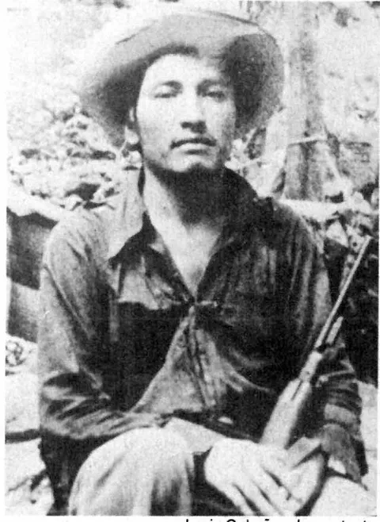

OKpolítico
OKpolíticoLucio Cabañas: 50 años entre la guerrilla y la Guerra Sucia

A 50 años de la muerte del profesor normalista y líder guerrillero Lucio Cabañas Barrientos en la sierra de Tecpán, OKpolítico explica las causas de su levantamiento armado y las consecuencias de la represión militar conocida como la Guerra Sucia.
Compartir por WhatsApp▶ Ver este video en YouTube y suscríbete
A 50 años de la muerte en El Otatal
El dos de diciembre de 1974, el profesor normalista Lucio Cabañas Barrientos murió durante un operativo militar en El Otatal, municipio de Tecpán de Galeana, Guerrero. La versión de la Secretaría de la Defensa Nacional sostuvo que cayó en un enfrentamiento armado tras siete años de persecución en la sierra.
50 años después, el caso sigue abierto en los tribunales y en los expedientes de derechos humanos. El primero de diciembre de 2024, unas 50 personas, entre familiares, excompañeros de combate y pobladores,
✉️ Recibe lo importante del día en tu correo. Suscríbete gratis →subieron al cerro de El Otatal para rendirle homenaje frente a una cruz instalada hace seis años. La comitiva estuvo encabezada por Micaela Cabañas Ayala, la única hija del líder guerrillero, quien pidió públicamente mantener vigente el legado social de su padre.
En ese mismo cerro se reiteró la exigencia de esclarecer cómo fue su muerte. De acuerdo con la revista Proceso,
para cercar y abatir a Cabañas el Ejército Mexicano desplegó cerca de 10,000 soldados en todo el estado de Guerrero, concentrando operaciones en Tecpán durante al menos cuatro años continuos.
Hasta octubre de 1974, las fuerzas armadas habían ejecutado más de 15 campañas militares directas contra su organización armada. Desde el 27 de noviembre de 2024, en el municipio de Atoyac se llevaron a cabo jornadas conmemorativas tituladas '50 años de lucha y raíces de resistencia, Lucio Cabañas Barrientos'.
Durante los foros, el profesor y escritor Felipe Fierro Santiago declaró ante los asistentes que el pensamiento y las demandas de Cabañas siguen resultando incómodos, incluso para la actual administración federal.
De Ayotzinapa a la rebelión en Atoyac
Lucio Cabañas Barrientos se formó como maestro rural en la Escuela Normal Rural Raúl Isidro Burgos de Ayotzinapa, en Tixtla, Guerrero, donde destacó tempranamente como dirigente en las organizaciones estudiantiles. Tras graduarse, ejerció la docencia en la Costa Grande de Guerrero, involucrándose de manera activa en las demandas campesinas y en las carencias de las escuelas de la región.
El origen directo de su paso a la clandestinidad ocurrió el 18 de mayo de 1967 en la plaza central de Atoyac de Álvarez. Según registros de la Comisión Nacional de los Derechos Humanos,
padres de familia y maestros realizaban un mitin pacífico en la cancha de basquetbol del pueblo para exigir la destitución de una directora escolar, el fin de cuotas obligatorias y la anulación del requisito de llevar uniforme y calzado para que los niños pobres pudieran entrar a clases.
La policía del estado disparó contra la multitud desarmada que protestaba en Atoyac. La CNDH consignó que en esa agresión entre cinco y once personas resultaron asesinadas y más de 20 sufrieron heridas de bala de gravedad.
Cabañas logró escapar con vida del tiroteo y se internó en la serranía guerrerense junto a un grupo de pobladores locales. En la sierra fundó el Partido de los Pobres y su brazo armado, la Brigada Campesina de Ajusticiamiento, sosteniendo una lucha armada contra el gobierno federal durante siete años.
Durante ese lapso, el movimiento operó mediante emboscadas, secuestros políticos y manifiestos que llamaban a derrocar el régimen autoritario del Partido Revolucionario Institucional y a repartir las tierras comunales.
La respuesta del Estado y la Guerra Sucia
La movilización guerrillera de Cabañas y otros grupos desató una respuesta militar y policial que los historiadores y organismos autónomos clasifican dentro del periodo conocido como la Guerra Sucia. En su Recomendación 98VG diagonal 2,023,
la Comisión Nacional de los Derechos Humanos acreditó 814 víctimas directas de violaciones graves y violencia política de Estado cometidas entre mil novecientos sesenta y cinco y mil novecientos noventa. La represión en Guerrero no se limitó a los combatientes en armas en la sierra, sino que abarcó a comunidades campesinas completas sospechosas de colaborar con la guerrilla.
La fiscalía especial y expedientes revisados por Gobernación vinculan las operaciones de esa época con otros casos emblemáticos, como la desaparición forzada del activista social Rosendo Radilla Pacheco a manos del Ejército en Atoyac.
La familia de Lucio Cabañas mantiene abiertas más de 300 carpetas de investigación por denuncias relacionadas con secuestros, desaparición forzada,
tortura y crímenes de lesa humanidad ocurridos a partir de 1974. Testimonios ministeriales recopilados por las víctimas señalan que el objetivo institucional fue neutralizar cualquier red de apoyo o parentesco con el líder insurgente.
Antonia Morales Serafín, sobrina de Lucio Cabañas, declaró que hace una década una agente ministerial le mostró una lista donde se asentaba que varios de sus familiares habían sido arrojados al mar desde aviones que despegaban de la Base Aérea Militar número siete en Pie de la Cuesta,
Acapulco. Morales Serafín aseguró además haber visto un documento sellado por la Secretaría de la Defensa Nacional con la consigna de exterminio contra toda la parentela.
Prisión, tortura y el testimonio de los sobrevivientes
Uno de los testimonios centrales de la persecución familiar es el de Pablo Cabañas Barrientos, hermano menor del guerrillero, quien actualmente tiene 84 años de edad. En entrevistas para El País y El Universal, relató haber sido capturado en enero de 1972 en Saltillo, Coahuila,
donde fue sometido a torturas físicas durante sus primeros interrogatorios policiales. Pablo Cabañas fue procesado judicialmente bajo cargos de conspiración, asociación delictuosa e incitación a la rebelión.
La autoridad judicial le dictó una condena de 12 años de prisión, de los cuales compurgó seis años recluido en centros penitenciarios de Saltillo y la Ciudad de México antes de obtener su libertad.
Durante los actos conmemorativos de 2024, declaró que no se arrepiente de los años pasados en reclusión por defender sus principios. El hermano del líder campesino reportó además las secuelas económicas de la persecución en su vejez, señalando que al momento de jubilarse recibía un salario mensual de apenas 5,000 pesos.
Al mismo tiempo, cuatro primas hermanas de la familia —Rosa Elena, Flavia, Irene y Juana Nava Cabañas— padecieron privación ilegal de la libertad desde 1972,
cuando fueron retenidas e interrogadas por más de un mes en instalaciones de procuración de justicia. Estas cuatro mujeres presentaron formalmente denuncias penales por tortura y detención ilegal sistemática sufridas entre los años mil novecientos sesenta y cinco y mil novecientos noventa.
Durante décadas, las fiscalías federales y locales congelaron las carpetas con el argumento jurídico de que los delitos ya habían prescrito por el paso del tiempo.
La resolución histórica de la Suprema Corte
El 13 de junio de 2024, la Suprema Corte de Justicia de la Nación emitió un fallo determinante para el expediente familiar. El máximo tribunal del país ordenó a la Fiscalía General de la República abrir y continuar las investigaciones por los abusos cometidos contra Rosa Elena,
Flavia, Irene y Juana Nava Cabañas durante la década de 1970. Los ministros resolvieron por unanimidad que los delitos denunciados no pueden considerarse delitos del fuero común ni prescribir bajo ninguna circunstancia.
La sentencia estableció que, al haberse ejecutado como parte de una política de violencia sistemática del aparato estatal, los actos de detención arbitraria y tortura constituyen crímenes de lesa humanidad, imprescriptibles bajo los tratados internacionales suscritos por México.
La orden judicial obliga a la FGR, a la Secretaría de la Defensa Nacional y a la Secretaría de Gobernación a desclasificar y revisar exhaustivamente sus archivos operativos. El objetivo es identificar las cadenas de mando militares y policiales responsables de las detenciones ilegales,
en un contexto donde los mandos de aquella época han fallecido o superan los 90 años de edad. Para los colectivos de familiares, la resolución representa un precedente jurídico fundamental para las más de 300 denuncias en trámite. Sin embargo,
los representantes legales subrayaron que una sentencia judicial no garantiza por sí sola sentencias condenatorias si el ministerio público no destina agentes especializados ni peritajes forenses para localizar los restos de los desaparecidos.
Contraste: el discurso legislativo frente a la sierra actual
El tres de diciembre de 2024, el Senado de la República conmemoró en sesión solemne el 50 aniversario luctuoso del profesor. El presidente de la Mesa Directiva, Gerardo Fernández Noroña,
afirmó que Cabañas murió por defender los derechos de los más pobres y subrayó que resistió siete años de acoso militar y represión estatal contra el pueblo de Guerrero. En la misma sesión,
la senadora del grupo mayoritario Simey Olvera Bautista vinculó el pensamiento de Cabañas con el proyecto de la llamada Cuarta Transformación, señalando que la lucha del maestro rural inspira la meta gubernamental de crear 300,000 nuevos espacios de educación superior en universidades e institutos tecnológicos del país para garantizar el acceso universal.
No obstante, las crónicas documentadas en el terreno contrastan con las proclamas parlamentarias de la capital. Según reportó el diario El Universal durante la conmemoración popular en El Otatal,
los pobladores y familiares denunciaron que en la sierra de Guerrero persiste la misma marginación que empujó al maestro a levantarse en armas en 1967: carencia de escuelas dignas, falta de clínicas, drenaje y agua potable.
A este reclamo comunitario se sumó la advertencia del escritor Felipe Fierro Santiago, quien remarcó en Atoyac que las demandas estructurales de Lucio Cabañas cuestionaban al poder mismo y continúan siendo ignoradas. Mientras el Congreso reivindica su figura de forma simbólica, los sobrevivientes de la guerrilla y los habitantes de la sierra afirman que los servicios básicos aún no llegan a sus comunidades.
La memoria abierta medio siglo después
50 años después de la caída de Lucio Cabañas en El Otatal, la discusión pública sobre su trayectoria mantiene dos narrativas polarizadas en México. Por un lado,
sectores oficiales y movimientos sociales lo consideran un defensor de los derechos campesinos orillado a las armas por la masacre de 1967; por el otro, expedientes policiales de la época lo clasificaron como transgresor del orden constitucional.
En el terreno de la justicia, la Fiscalía General de la República enfrenta el mandato legal inapelable de judicializar las carpetas por crímenes de lesa humanidad instruidas por la Suprema Corte. El esclarecimiento del paradero de las víctimas de los vuelos militares en Pie de la Cuesta y la reparación integral a los sobrevivientes torturados continúan siendo asignaturas pendientes del Estado mexicano.
En el plano social, la persistencia del rezago en la Costa Grande demuestra que las raíces del conflicto rural trascienden los periodos presidenciales y las ideologías de turno. Corresponde a la ciudadanía informada evaluar si el reconocimiento de estos capítulos históricos se traduce en justicia efectiva para las víctimas o si permanece únicamente en homenajes discursivos.
Sigue viendo
Con información de
El País México · El Universal · Senado de la República · Comisión Nacional de los Derechos Humanos (CNDH) · Proceso